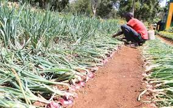
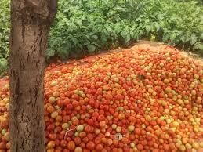
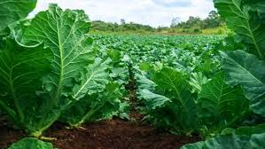
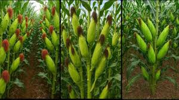
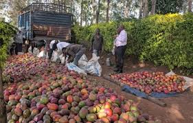
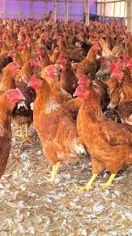
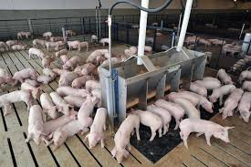
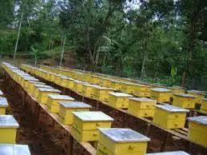
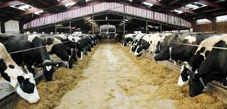
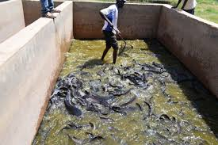

AgriVibe connects farmers, buyers, and technology to improve agricultural productivity.

Tea plantation
Tea plantations are vast areas where the tea plant (Camellia sinensis) is cultivated under favorable climatic conditions. Found mainly in tropical and subtropical regions, these plantations require acidic soils, abundant rainfall, and moderate temperatures. The young shoots of the plant are carefully plucked and processed into different varieties such as black, green, and oolong tea. Beyond their agricultural significance, tea plantations play a vital role in the economy by providing employment and generating export revenue. In countries like Kenya and India, tea is not only a major cash crop but also a cultural symbol, deeply woven into daily life and traditions. Sustainable management of tea plantations ensures both economic prosperity and environmental balance.

Onion plantation
Onion plantations are an important part of commercial agriculture, especially in Kenya where they serve both local and international markets. The crop thrives in well-drained loamy soils under moderate temperatures and requires careful irrigation and fertilization to achieve high yields. Farmers typically grow varieties such as Red Creole and Bombay Red, which are well-suited to Kenyan conditions. Harvesting is done once the leaves dry and fall, after which bulbs are cured to extend shelf life. Onion farming is not only profitable, with yields reaching up to 130 quintals per acre, but also vital for rural livelihoods and nutrition, making it a cornerstone of vegetable production in many regions.

Tomato plantation
Tomato plantations play a vital role in Kenya’s horticultural sector, providing both food and income to thousands of farmers. Tomatoes grow best in warm climates with well-drained soils and require careful irrigation and fertilization to achieve high yields. Farmers often cultivate hybrid varieties such as Anna F1 and Kilele F1, which are resistant to common diseases and produce abundant fruits. Harvesting begins about three months after transplanting, with yields ranging from 15 to 30 tons per acre under proper management. Beyond their economic importance, tomatoes are a staple in Kenyan households, valued for their nutritional content and versatility in cooking, making tomato farming a cornerstone of food security and agribusiness.

Kales Plantation
Sukuma plantations are an essential part of Kenyan agriculture, providing both nutrition and income to rural households. The crop thrives in fertile, well-drained soils under moderate temperatures and requires regular irrigation and nitrogen-rich fertilizers to maintain healthy leafy growth. Farmers often grow varieties such as Thousand Headed Kale and Collard Greens, which are well-suited to local conditions. Harvesting begins within two months of planting and continues for several months, making sukuma a dependable source of food and revenue. Beyond its economic importance, sukuma wiki holds cultural significance as a staple vegetable in Kenyan diets, symbolizing resilience and affordability in everyday meals.

Maize Plantation
Maize plantations are the backbone of Kenyan agriculture and a staple crop across Africa. Maize (corn) is grown both for household consumption and commercial purposes, serving as the main ingredient in ugali, animal feed, and industrial products. It is a versatile crop but requires careful management of soil fertility, rainfall, and pests to achieve high yields.

Mango plantation
Mango plantations are a major fruit farming enterprise in Kenya and across tropical regions worldwide. Mangoes are valued for their sweet taste, nutritional benefits, and economic importance, both in local markets and for export. They thrive in warm climates, require well-drained soils, and can produce fruit for decades once established.

Agribusinee layers Farm
Kuku (poultry/chicken) plantations are one of the fastest-growing agribusiness ventures in Kenya and globally. Poultry farming provides meat, eggs, and manure, making it a multi-purpose enterprise that supports food security, nutrition, and income generation. It can be done on both small-scale backyard setups and large commercial farms.

Pigs farm Agribusinee
Pig plantations are an increasingly important part of livestock farming in Kenya, offering farmers quick returns and reliable income. Pigs are raised in well-ventilated housing and fed balanced diets of grains, vegetables, and commercial feeds to ensure rapid growth. Breeds such as Large White and Landrace are popular for their high productivity, with sows producing up to 12 piglets per litter. With proper health management and biosecurity, pigs reach market weight within six months, making them one of the most profitable livestock ventures. Beyond their economic value, pigs contribute to food security by supplying affordable protein and provide manure that enriches soils, making pig farming a vital component of sustainable agribusiness.

Bee Farming
Bee plantations (apiaries) are specialized farms where honeybees are reared for honey, wax, propolis, royal jelly, and pollination services. Beekeeping is a sustainable agribusiness that requires relatively low investment but provides high returns, especially in regions like Kenya where demand for honey and pollination is strong.

Dairy Farming
Ng’ombe plantations are a vital part of Kenya’s agricultural sector, supporting both food security and rural livelihoods. Farmers rear dairy breeds such as Friesians and Ayrshires for milk, while Boran and Sahiwal cattle are popular for beef production. Cattle require proper housing, balanced feeding, and regular health management to remain productive. Beyond milk and meat, cattle provide manure for crop farming and biogas for household energy, making them multifunctional assets. In many Kenyan communities, cattle also carry cultural importance, symbolizing wealth and tradition. With their economic, nutritional, and cultural value, ng’ombe plantations remain a cornerstone of sustainable agribusiness.

Fish Farming
Fish plantations, also known as aquaculture farms, are becoming vital sources of food and income in Kenya. Farmers rear species such as tilapia and catfish in ponds, cages, or tanks, ensuring proper feeding and water management to achieve high yields. Hatcheries supply fingerlings, which grow to market size within months, providing steady returns. Beyond their profitability, fish plantations contribute to food security by supplying affordable protein and reducing reliance on wild fisheries. With growing demand for fish both locally and internationally, aquaculture is emerging as a sustainable solution for nutrition, employment, and environmental conservation.

Goat Farming
Goat plantations are a vital part of livestock farming in Kenya, offering farmers a reliable source of income and nutrition. Goats are hardy animals that adapt well to semi-arid climates, feeding on shrubs and crop residues with minimal input. Farmers rear dairy breeds such as Toggenburg and Saanen for milk, while Boer and Galla goats are popular for meat production. With proper health management and housing, goats reproduce quickly, providing steady returns. Beyond their economic value, goats hold cultural significance in Kenyan communities and contribute to food security, making goat farming a sustainable and profitable agribusiness.